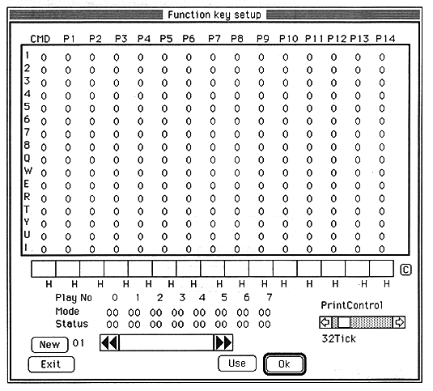

PrintControl: Adjust the interrupt interval for Mode and Status update. 1Tick is 1/60 second. C: Clears the contents of the selected function key. New: Prepare a new map page. <-/->: Select the key assignment page. The function key table is identified by number and name. The table name can be set arbitrarily with the edit text between the arrow keys. Use: Use <--> to select the page and confirm the active key assignment with Use. Ok: Assigns the input data set in the middle entry box to the selected key. Exit: Closes the window.
For command codes and various parameters, refer to the SATURN Sound Driver Sound Embedded Manual.